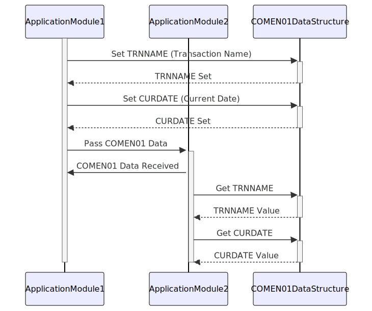

–CONTENT TO TRANSLATE– Gerado em: 1º de outubro de 2024
Título do Documento: COMEN01 - Especificação da Estrutura de Dados Comum
Descrição Resumida:
O arquivo COMEN01.CPY define uma estrutura de dados comum em COBOL, provavelmente utilizada para compartilhar dados entre diferentes módulos ou programas. Ele inclui campos para nomes de transações, títulos, datas, horas, opções e mensagens de erro. O uso de REDEFINES permite representação e acesso flexível aos dados.
Histórias do Usuário: Como desenvolvedor, preciso de uma estrutura de dados padronizada para garantir a consistência e simplificar a troca de dados entre diferentes partes da aplicação.
Épico Relacionado: 9 - Utilitários do Sistema
Requisitos Técnicos:
COMEN01.CPY define uma estrutura de dados COBOL chamada COMEN1AI.TRNNAME: Nome da transação.TITLE01, TITLE02: Títulos ou cabeçalhos para exibição.CURDATE: Data atual.PGMNAME: Nome do programa ou módulo.CURTIME: Hora atual.OPTN001 a OPTN012: Opções de menu.OPTION: Opção selecionada pelo usuário.ERRMSG: Mensagem de erro.REDEFINES para fornecer representações alternativas de dados.TRNNAMEF é redefinido como TRNNAMEA para acessar o nome da transação como um único caractere.TITLE01, CURDATE, etc.PIC (PICTURE) para especificar seu tipo de dado e comprimento.TRNNAMEI PIC X(4) define TRNNAMEI como um campo alfanumérico com um comprimento de 4 caracteres.Modelos Relacionados Não há definição de modelo dentro do código.
Configurações: Não há definição de configuração dentro do código.
Melhorias de Código:
OPTN001, OPTN002, etc.Melhorias de Segurança:
Diagrama Conceitual:
–Made by “Smart Engineering” (by Compass.UOL)–